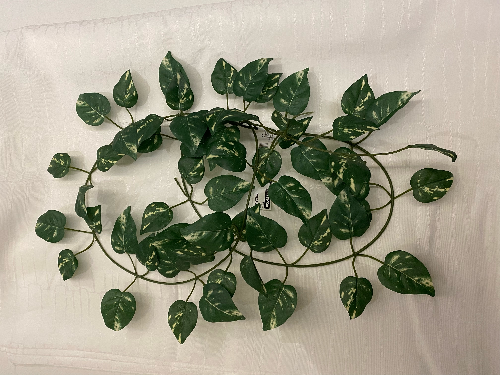
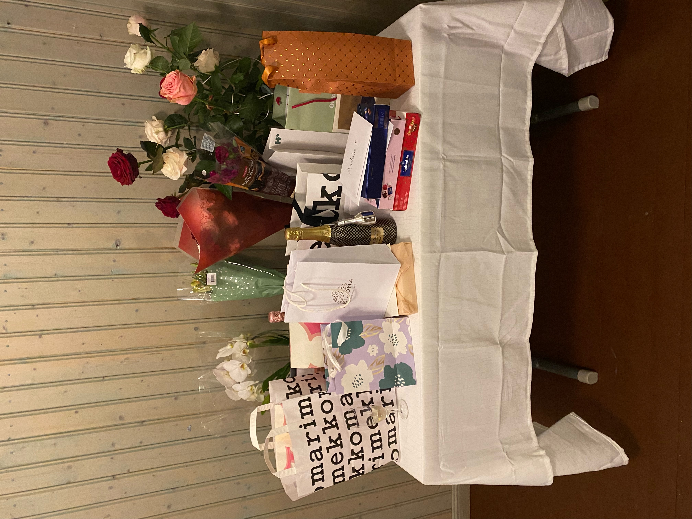
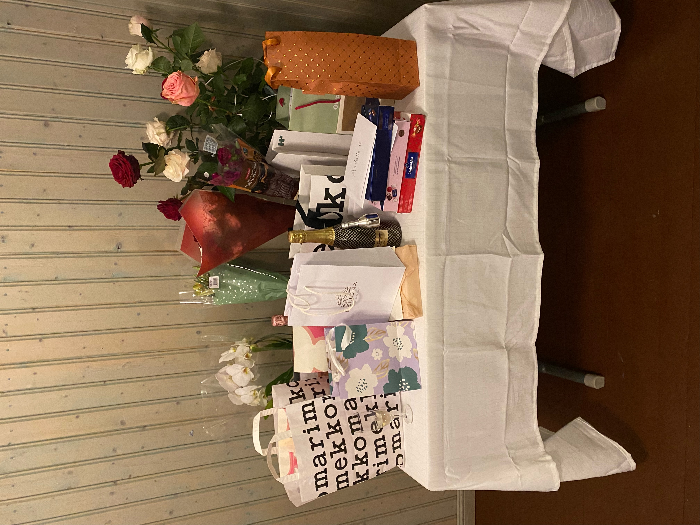
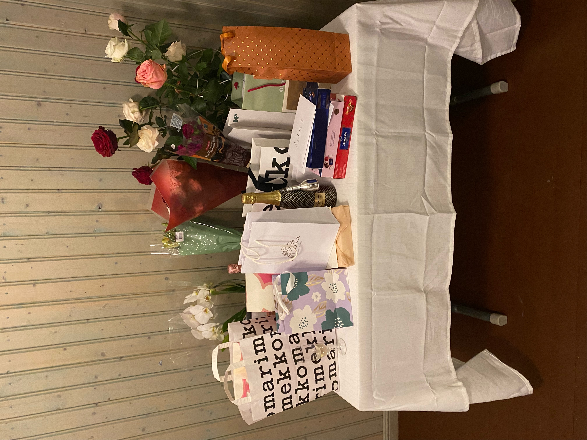

Ylioppilasjuhlien paikaksi valikoitui Ylästön kotiseututalo.
Osallistujamäärä oli noin 50 henkilöä, joten talvijuhlien ollessa kyseessä asunto kävi nopeasti pieneksi.
Halusimme turvata kaikille istumapaikan, joten siksi päädyimme Ylästön kotiseututalolle.
Kotiseututalo sopi hyvin tarpeisiimme. Hankaluutena oli tavaroiden raahaaminen edestakaisin.
Ruokatarjoilumme
Juhlien järjestämisessä on kiinnitettävä moneen asiaan huomiota. Kuten esimerkiksi tarjoiltaviin ruokiin ja tilan tarvittavaan koristeluun. Tein lähes kaikki ruuat itse. Ruoka oli hyvää. Muutoin ruuan määrä oli hyvä, mutta lihaa oli hankittu aivan liikaa. Juomia oli runsaasti.
Tarjoiltavat ruuat
Salaatti
Tomaatti
Kurkku
Feta
Oliivit
Kermaperunat
Rosepippuripaisti
Mustikka-valkosuklaajuustokakku
Tarjoiltavat juomat
Alkumalja: Kuohuviini tai Pommac
Valkoviini
Punaviini
Olut
Lonkero
Mehu
Cola
Kahvi ja tee
Juhlien koristelu ja lahjapöytä


Tilan valinta vaikuttaa pitkälti juhlan suunnitteluun ja koristeluun. Kävin itse päivänsankarin kanssa läpi kattauksen. Millaisen tyylin haluaa ja miten toteutimme. Suunnittelimme kattausta käydessämme Ikeassa ja laskimme tarkasti määriä.
Käyttämäni tekniikat projektitehtävässä
CSS Taustakuvaa sekä sen yhteydessä olen käyttänyt linear-gradient


 
